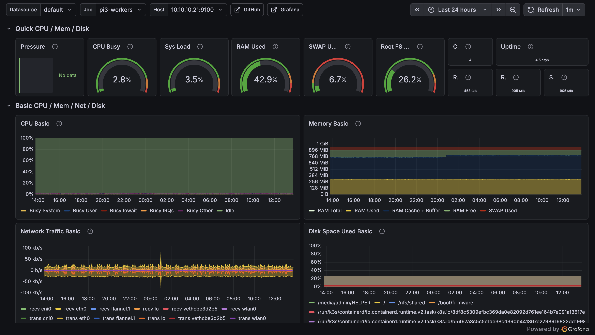
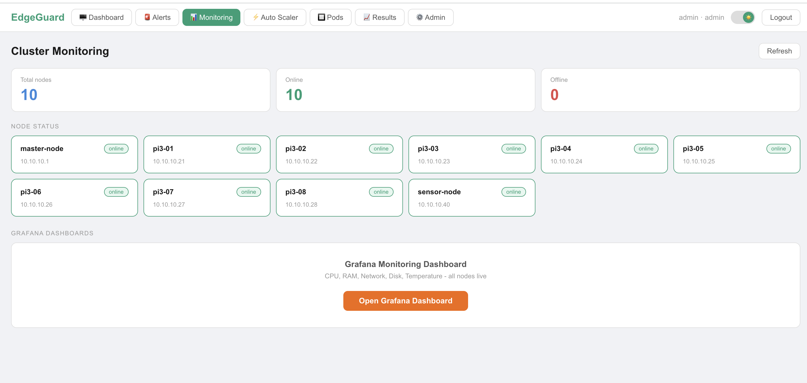
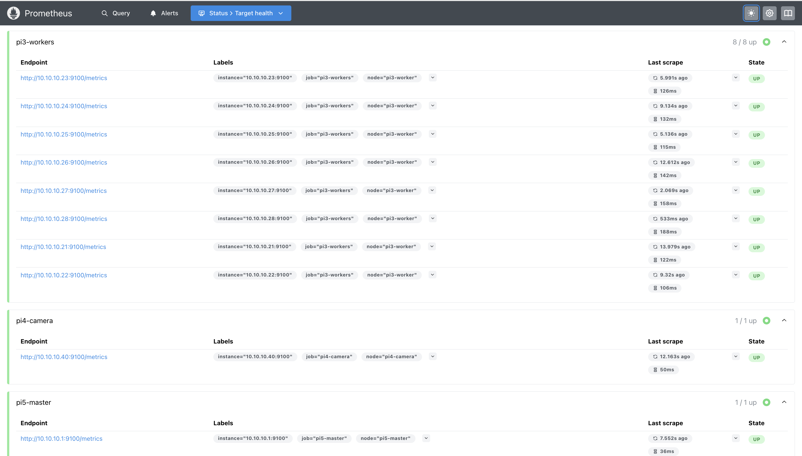

Real-time cluster health monitoring using Prometheus, Grafana, and Node Exporter — deployed as persistent k3s services across all 10 nodes.
In a 10-node cluster running production workloads alongside benchmarks, you need to know what is happening on every node at all times — which nodes are online, how much CPU they are using, whether memory is getting tight, and whether services are healthy. Without monitoring, debugging a crashed benchmark or a failing pod is guesswork.
We deployed a standard cloud-native monitoring stack: Node Exporter runs on every node and exposes hardware metrics. Prometheus scrapes those metrics every 10 seconds and stores them as time-series data. Grafana reads from Prometheus and renders interactive dashboards. The EdgeGuard backend also queries Prometheus directly to feed real-time data to the React dashboard.
Three components work together. Think of it as a pipeline: collect → store → visualize.
Node Exporter is a lightweight agent that runs on every single node in the cluster (all 10 — Pi5, Pi4, and all 8× Pi3s). It reads hardware and OS metrics directly from the Linux kernel and exposes them as an HTTP endpoint on port 9100. Prometheus then scrapes this endpoint.
Node Exporter was deployed as a systemd service on each node so it starts automatically on boot and restarts if it crashes.
# SSH into any node and check status ssh admin@10.10.10.21 "systemctl status node_exporter" # Check the metrics endpoint directly curl http://10.10.10.21:9100/metrics | head -20 # Example output lines: node_cpu_seconds_total{cpu="0",mode="idle"} 12345.67 node_memory_MemAvailable_bytes 456789012 node_thermal_zone_temp{zone="0"} 42900 ← temperature in millidegrees
Prometheus is the central metrics collector. It runs as a k3s Deployment on the Pi5 and scrapes every node's Node Exporter endpoint every 10 seconds. All scraped data is stored as time-series in Prometheus's local storage — meaning you can query not just current values but also historical trends (e.g. "what was CPU usage 30 minutes ago?").
The key configuration is the scrape config — a list of all nodes Prometheus should collect metrics from, and how often.
global: scrape_interval: 10s # scrape every 10 seconds evaluation_interval: 10s scrape_configs: - job_name: 'node-exporter' static_configs: - targets: # Pi5 master node - '10.10.10.1:9100' # Pi4 sensor node - '10.10.10.40:9100' # Pi3 worker nodes - '10.10.10.21:9100' - '10.10.10.22:9100' - '10.10.10.23:9100' - '10.10.10.24:9100' - '10.10.10.25:9100' - '10.10.10.26:9100' - '10.10.10.27:9100' - '10.10.10.28:9100'
# Check pod status kubectl get pods -A | grep prometheus # Check all targets are UP (all 10 nodes should show UP) curl http://localhost:9090/api/v1/targets | python3 -m json.tool | grep -E '"health"|"job"'
Grafana is the visualization layer. It runs as a k3s Deployment on Pi5 and connects to Prometheus as a data source. We configured pre-built dashboards showing per-node CPU, RAM, temperature, and uptime. The dashboards auto-refresh every 10 seconds matching the Prometheus scrape interval.
Grafana is deployed behind a NodePort service making it accessible on the cluster network. The EdgeGuard frontend Monitoring page embeds a direct link to the Grafana dashboard.
# Check pod status kubectl get pods -A | grep grafana # Check service and NodePort kubectl get svc -A | grep grafana
Node Exporter exposes hundreds of metrics but we focus on the ones that matter for a Raspberry Pi cluster running benchmarks and AI inference.
node_cpu_seconds_totalnode_memory_MemTotal_bytesnode_memory_MemAvailable_bytesnode_memory_SwapFree_bytesnode_thermal_zone_tempnode_time_secondsRaspberry Pi 3B+ throttles its CPU frequency when it exceeds 80°C — silently reducing performance without any error. During sustained HPL and MPI benchmarks, nodes without active cooling regularly hit this threshold. Monitoring confirmed that fan cooling kept all nodes below 65°C throughout our benchmarks, ensuring results were not affected by thermal throttling.
Prometheus is not just for Grafana — our backend queries it directly via the Prometheus HTTP API to feed real-time data into the EdgeGuard React frontend. This means the monitoring data appears in our own dashboard, not just in Grafana.
The Flask backend exposes a /api/system/status endpoint
that queries Prometheus and returns per-node CPU and RAM in a format the
React frontend can display. This powers the live node grid on the Monitoring page.
# Backend queries Prometheus HTTP API # Prometheus runs at http://prometheus-service:9090 import requests def get_node_cpu(node_ip): # PromQL query: average CPU usage over last 1 minute query = f'100 - (avg by (instance) ' f'(rate(node_cpu_seconds_total{{mode="idle",instance="{node_ip}:9100"}}[1m])) * 100)' response = requests.get( 'http://prometheus-service:9090/api/v1/query', params={'query': query} ) result = response.json()['data']['result'] return float(result[0]['value'][1]) if result else 0
{
"nodes": [
{
"name": "pi3-01",
"ip": "10.10.10.21",
"status": "online",
"cpu": 6.2, ← CPU usage %
"ram": 43.8, ← RAM usage %
"uptime": "2d 4h"
},
// ... all 10 nodes
],
"services": [
{ "name": "Detection Service", "status": "running" },
{ "name": "Backend API", "status": "running" },
{ "name": "Prometheus", "status": "running" },
{ "name": "Grafana", "status": "running" }
]
}
Both Prometheus and Grafana are deployed as k3s Deployments — not just standalone processes. This means k3s automatically restarts them if they crash, reschedules them if a node goes down, and keeps them running across reboots. You do not need to manually start Prometheus or Grafana after a reboot — k3s handles it.
# All monitoring pods should show Running kubectl get pods -A | grep -E "prometheus|grafana|node-exporter" # Check node exporter on all Pi3s for ip in 10.10.10.21 10.10.10.22 10.10.10.23 10.10.10.24 \ 10.10.10.25 10.10.10.26 10.10.10.27 10.10.10.28; do echo -n "$ip node_exporter: " ssh admin@$ip "systemctl is-active node_exporter" done



Node Exporter runs on every node including Pi5, Pi4, and all 8× Pi3s. Prometheus scrapes all 10 nodes every 10 seconds. No node is unmonitored — giving complete cluster visibility.
It is not just a separate Grafana dashboard — the Flask backend queries Prometheus directly and serves real-time node metrics to the React frontend. The Monitoring page is a first-class feature of EdgeGuard, not an add-on.
Temperature data from Node Exporter confirmed Pi3 nodes stayed below 65°C during all MPI and HPL benchmarks with active fan cooling. This validates that benchmark results were not affected by CPU throttling.
Prometheus is the industry standard for Kubernetes cluster monitoring — it is what every real cloud cluster uses. Using it here demonstrates real-world cloud computing practices, not just a student experiment. The same stack runs in production clusters at Google, Airbnb, and others.